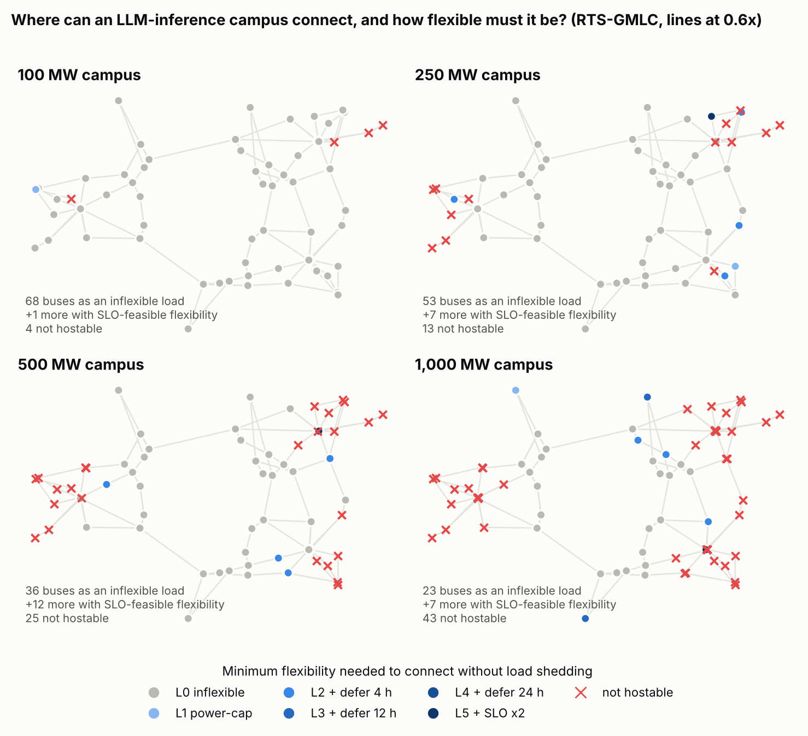

Research brief · Prepared for Prof. Priya Donti · MIT EECS · LIDS
Flexible AI Data Centers on a Constrained Grid
SLO-grounded flexibility, network-aware signals, and certified interconnection maps
Shivankur Sharma · Software Engineer, Microsoft Azure Core Compute (node lifecycle management) · BITS Pilani, B.E. Computer Science + M.Sc. (Hons.) Mathematics
your.email@personal.com · github.com/shivankur-code/flexible-ai-datacenter · linkedin.com/in/your-handle
Seeking PhD admission, Fall 2028
Why your work
DC3 and FSNet make a point I find beautiful: learned optimizers are only useful for the grid if they respect its hard constraints. AI data centers are becoming some of the largest and most flexible loads on the grid, yet most flexibility studies treat the grid as a price or carbon signal and ignore the network. I build the control plane that manages compute fleets. In this project I connected what an inference fleet can actually flex to what a constrained grid physically needs, and I tested where hard-constraint learning holds up on that problem and where it breaks.
The question
When AI inference campuses flex only within their latency SLOs, where on a congested transmission network can they connect, which signal should steer that flexibility, and can constraint-enforcing learned solvers plan the joint fleet–grid dispatch with guarantees?
The gap
- Data-center flexibility is usually assumed (“X% shiftable”) rather than derived from what an inference fleet can shift or shed without breaking its latency targets.
- Signal-following flexibility can lower costs but raise emissions (Knittel et al., 2025). Network constraints and locational marginal emissions decide which effect wins, and where a campus can connect at all.
- Joint fleet–grid dispatch is a large multi-period LP with deadlines and load-shedding slack. Whether hard-constraint learners deliver fast, feasible, near-optimal solutions there was untested.
What I bring
Multi-objective optimization
Published fuzzy mixed-integer linear programming model balancing economic, environmental and social goals for reuse, refurbishing, recycling and leasing decisions.
Operator’s view of fleets
Four years on disaster recovery and replication (Nutanix), and now node lifecycle on Azure’s compute control plane: failures, repairs, maintenance drains and capacity limits are my daily reality.
Mathematics depth
Dual degree in Computer Science and Mathematics (BITS Pilani, CGPA 8.88): probability, optimization, numerical methods.
What I built (open source)
- An SLO-aware LLM inference fleet simulator, driven by the public Azure 2024 LLM trace (44M requests). It turns p99 latency SLOs into a linear hourly envelope: firm power, power sheddable by GPU power capping, and deferrable batch energy with deadlines.
- A year of network-constrained dispatch on RTS-GMLC (73 buses, real fuels and 2020 renewables), comparing six ways to steer the same flexibility, with LMPs and LMEs computed from the optimal basis.
- A certified flexible-interconnection map for 73 buses × 4 campus sizes, plus a solver study covering DC3-style, gauge-map, FSNet-style and exact-screening methods. Everything is reproducible, with 38 tests and a paper draft written through Google’s PaperOrchestra pipeline.
Approach
RTS-GMLC 73-bus grid + 2020 renewables, lines derated
SLO-grounded fleet envelopes (Azure 2024 LLM trace)
LMPs + locational marginal emissions
→
Year-long DC-OPF · 6 steering signals · exact screened HiGHS · certified hosting map
→
Where a campus can connect
Emissions by steering signal
Speed vs optimality vs feasibility
Results · from the open-source repo
Headline finding
Letting an AI inference campus flex within its SLOs lets a 500 MW campus connect at 48 instead of 36 of 73 buses without load shedding, raising the grid’s hosting capacity by 22%. Steered by locational marginal emissions, the same flexibility cuts the campus’s emissions by 5.7–12.3%, versus 2.4–3.2% for cost-only co-optimization. End-to-end hard-constraint learners hit an interior-anchor barrier on this problem, while exact constraint screening matched the optimum with zero violations at 3.2× speed.

Figure 1. Minimum SLO-feasible flexibility to connect without load shedding, per bus and campus size (RTS-GMLC, lines 0.6×); flexible entries verified over all 365 days.
4.9%
of load sheddable within p99 SLOs; batch work supplies most flexibility (19.8% of energy)
36 → 48
buses that can host a 500 MW campus; hosting capacity 35.3 → 42.9 GW
≈4×
more emission reduction from following LMEs than from cost co-optimization
+0.9%
emissions from price-following at a coal-margined bus, even as cost falls 2.8%
Solvers, honestly. With load shedding as the only slack, every interior point sheds load: gauge-map/projection outputs are feasible but 27–114× the optimal cost, and DC3-style correction violates lines by up to 178 MW. Exact screening + constraint generation: optimal, feasible, 3.2× faster (6.9× bound).
Where this could go in your group
- Learned interior anchors and certificates to make gauge-map and FSNet-style guarantees usable for OPF with load-shedding slack.
- Data centers as reliable grid resources: flexible interconnection with uncertainty-aware guarantees; multi-campus hosting.
- Benchmarks: fleet envelopes and the certified hosting map as a learning-to-optimize benchmark.
About me
I see mathematics as a language for modelling complex real-world systems. That belief took me from multi-objective fuzzy optimization for circular economies (published 2024, with BITS Pilani faculty) to four years building disaster-recovery and replication systems at Nutanix, and now to node lifecycle management on Microsoft Azure’s compute control plane, where I see every day how real fleets drift away from the plans made for them. I want to spend my PhD making AI infrastructure sustainable in practice, not just on paper.
References
- P. L. Donti, D. Rolnick, J. Z. Kolter. DC3: A learning method for optimization with hard constraints. ICLR 2021 (arXiv:2104.12225).
- H. Nguyen, P. L. Donti. FSNet: Feasibility-seeking neural network for constrained optimization with guarantees. NeurIPS 2025.
- C. R. Knittel, J. R. L. Senga, S. Wang. Flexible Data Centers and the Grid: Lower Costs, Higher Emissions? NBER WP 34065, 2025.
- J. Stojkovic, C. Zhang, Í. Goiri, J. Torrellas, E. Choukse. DynamoLLM: Designing LLM inference clusters for performance and energy efficiency. HPCA 2025 (Azure 2024 LLM trace).
- C. Barrows et al. The IEEE Reliability Test System: A proposed 2019 update. IEEE Transactions on Power Systems, 2020 (RTS-GMLC).
- V. Poonia, R. Kulshrestha, K. S. Sangwan, S. Sharma. A multi-objective fuzzy mathematical model for circular economy with leasing as a strategy. Management of Environmental Quality 35(7):1592–1621, 2024.